01
Pré-lavage sans contact
Aspersion d'une mousse active pour décrocher la saleté avant tout contact avec la carrosserie.
à partir de 25 $Service mobile · Région de Québec
Une équipe mobile qui se déplace chez vous avec l'équipement et les produits d'un atelier professionnel. Lavage premium, décontamination, scellant hydrophobe et nettoyage intérieur complet — votre véhicule retrouve son éclat sans bouger de votre entrée.
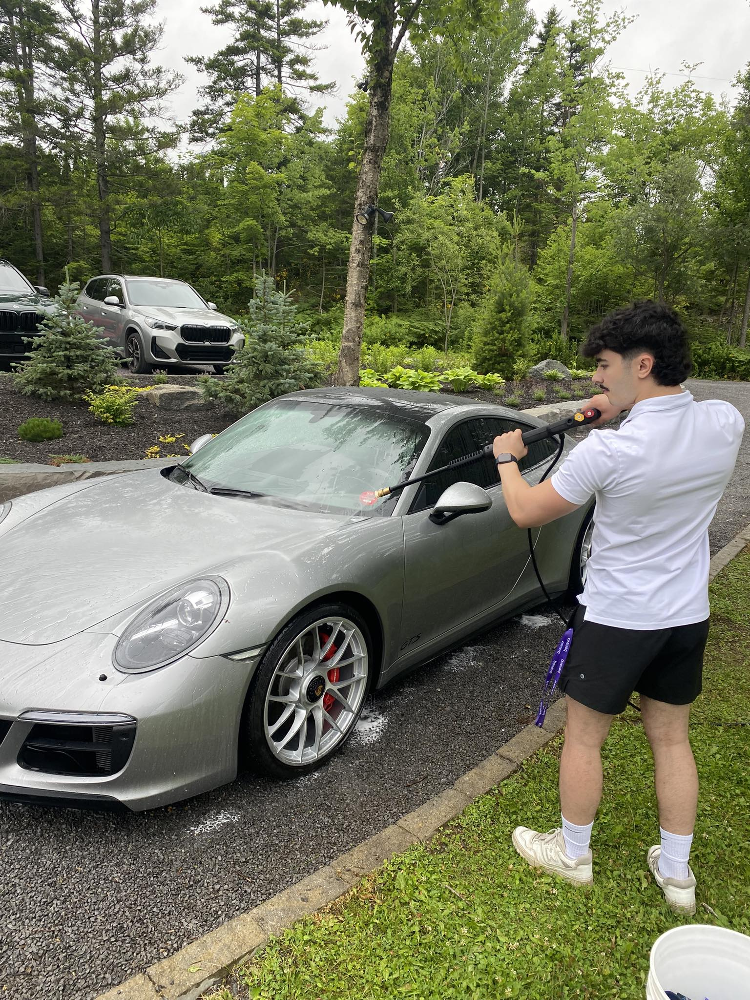
Service à domicile · QuébecL'équipe
Alexandre Doyon et son équipe ont fait de l'esthétique automobile un métier d'attention. Chaque véhicule est traité comme un projet à part entière — du pré-lavage au scellant final, en passant par la décontamination ferreuse et la vapeur.
De la berline familiale à la sportive d'exception, l'approche reste la même : produits professionnels, technique éprouvée, fini impeccable. Et comme l'équipe se déplace, vous n'avez pas à perdre une demi-journée à attendre dans une salle d'attente — le travail se fait chez vous, au bureau, ou là où votre véhicule est stationné.
Services
Trois grands volets : l'extérieur, les roues et l'intérieur. Chaque forfait peut être ajusté selon l'état du véhicule. Les tarifs ci-dessous sont indicatifs et confirmés au moment de la prise de rendez-vous.
Aspersion d'une mousse active pour décrocher la saleté avant tout contact avec la carrosserie.
à partir de 25 $Méthode professionnelle au gant microfibre pour éviter les micro-rayures, suivi d'un séchage en douceur.
à partir de 60 $Élimination chimique des particules métalliques incrustées sur la peinture et les jantes.
à partir de 70 $Pour les zones sensibles et les recoins — désinfection profonde sans produits chimiques agressifs.
à partir de 80 $Protection longue durée qui fait perler l'eau et facilite chaque lavage suivant.
à partir de 120 $Dégraisseur, nettoyage approfondi des barillets, fini satiné sur les flancs.
à partir de 30 $Aspiration, shampooinage des tapis et bancs en tissu, vapeur dans les recoins.
à partir de 140 $Nettoyage en douceur, hydratation et protection des bancs et garnitures en cuir.
à partir de 80 $Pour les cas les plus tenaces — boue, sel d'hiver, taches anciennes. Résultat « avant/après » garanti.
à partir de 90 $Intérieur et extérieur, sans traces. Inclus dans tous les forfaits intérieur+extérieur.
inclus / 20 $ seulTarifs indicatifs — confirmés selon la taille du véhicule et l'état au moment du rendez-vous. Un diagnostic gratuit est offert avant chaque intervention afin de proposer le forfait le mieux adapté.
Galerie
Quelques véhicules passés entre les mains de l'équipe — Porsche, BMW, Mercedes, Ford. Photos issues de la page Facebook officielle @lavage.doyon.
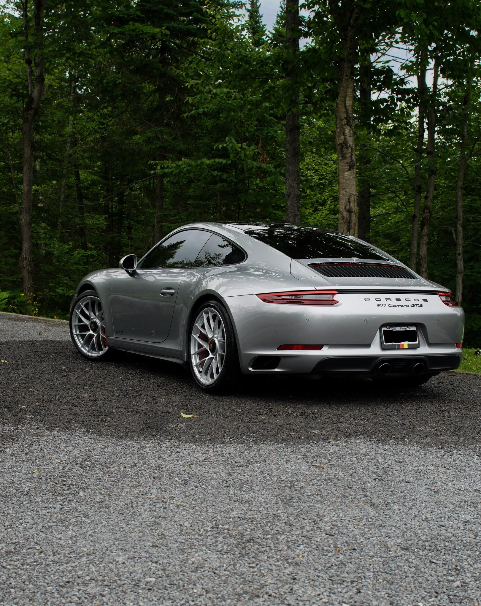
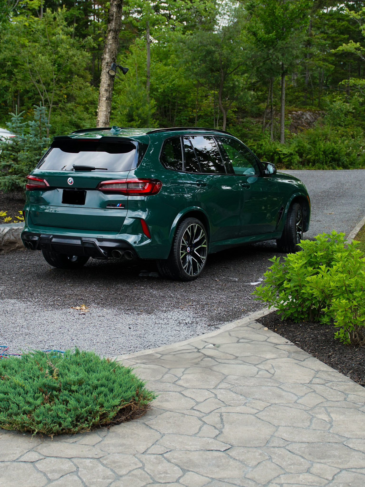
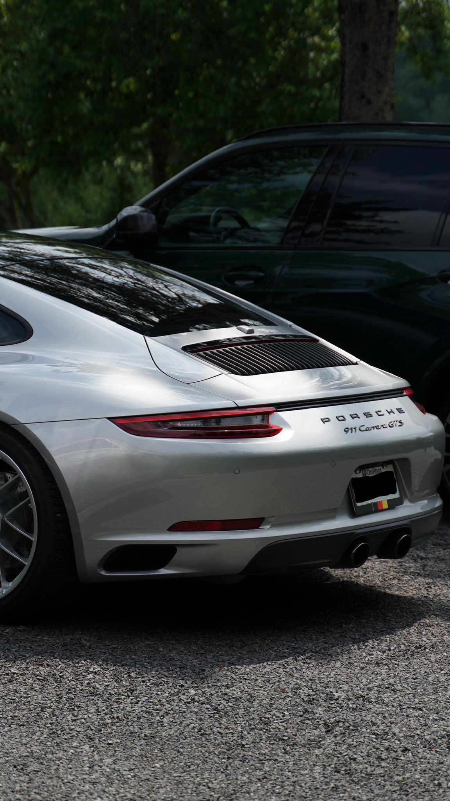
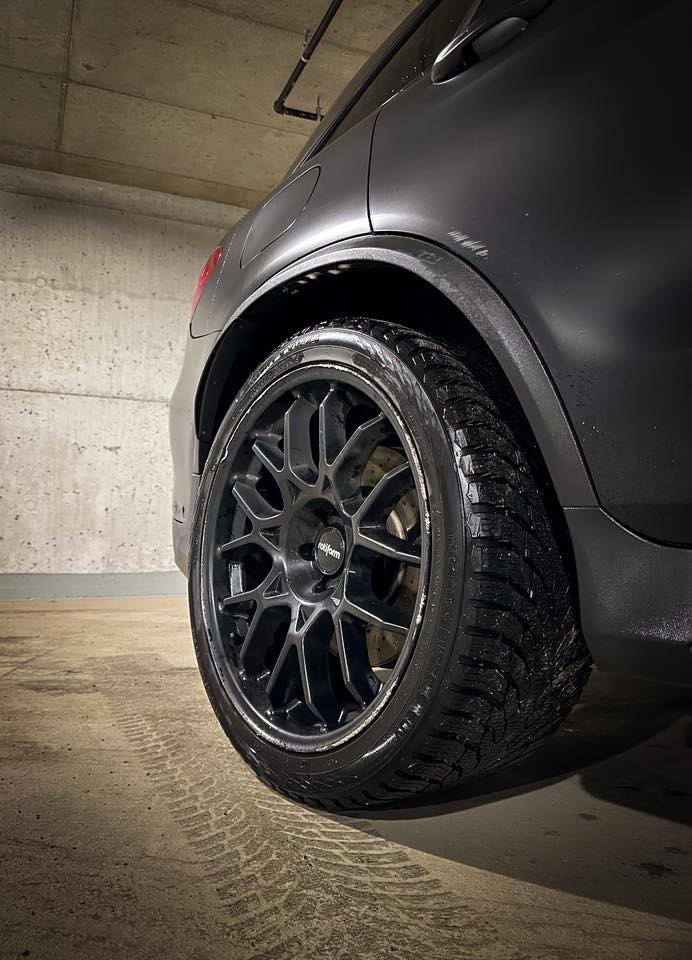
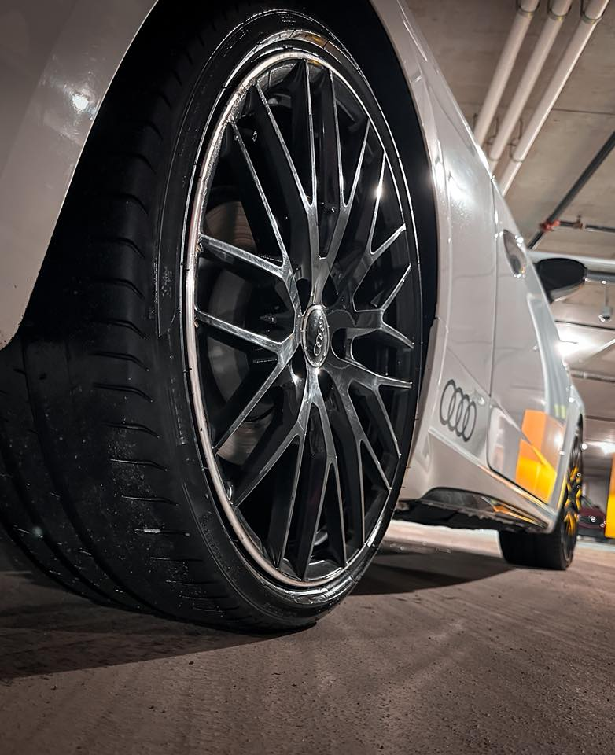
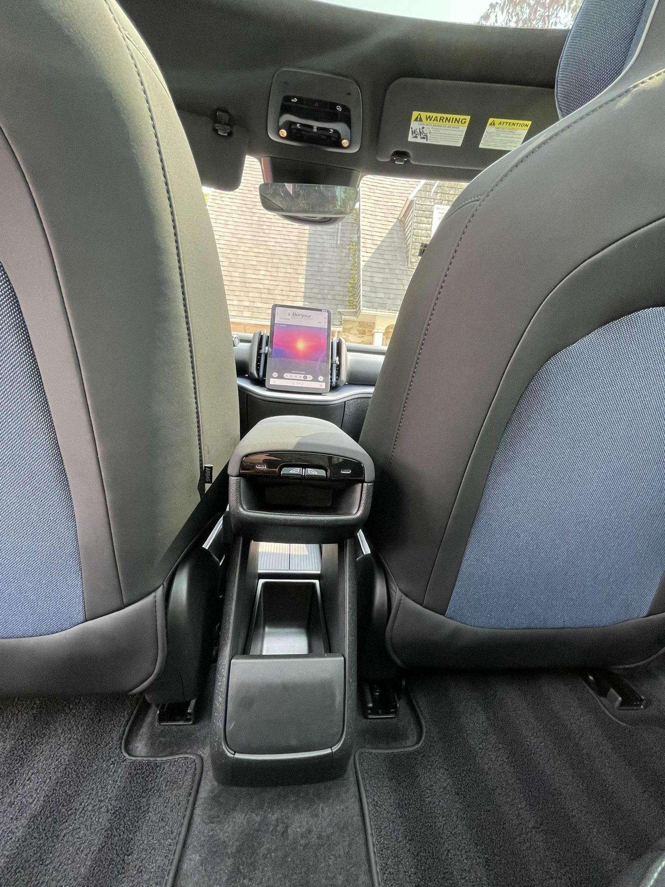
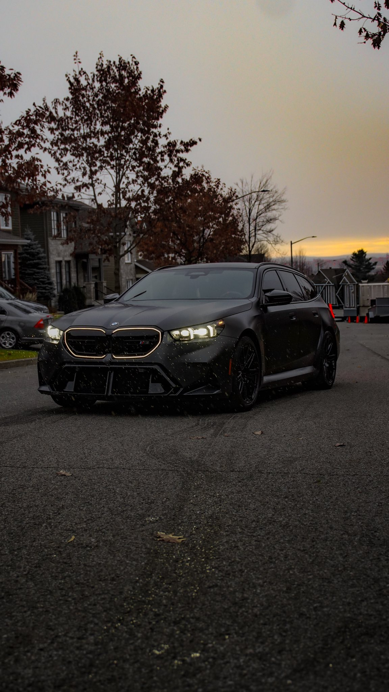
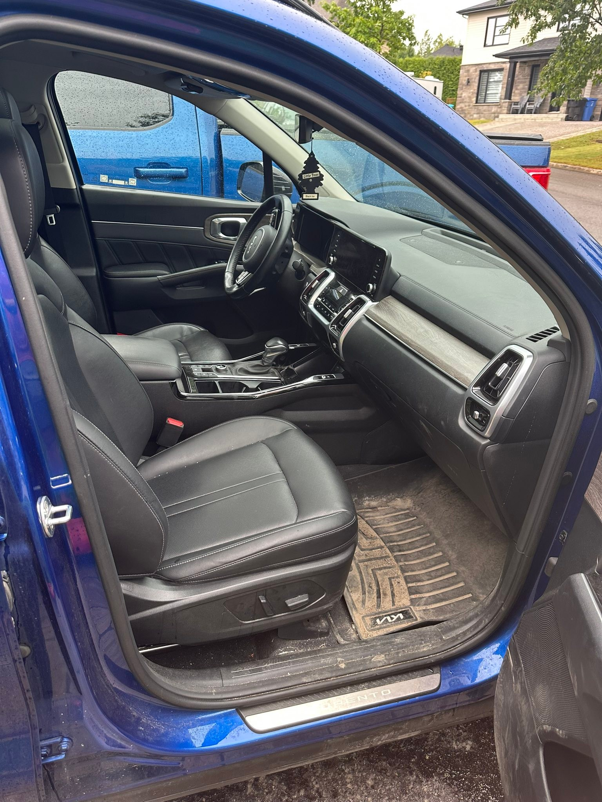
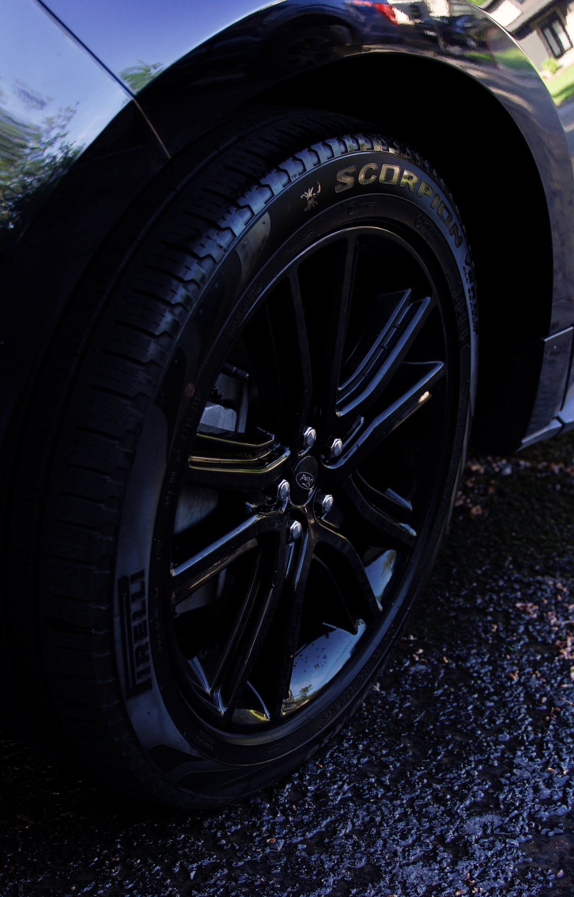
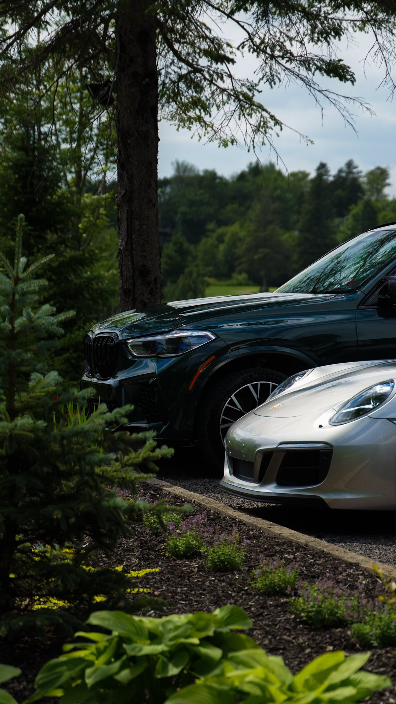
Témoignages
Quelques mots reçus de propriétaires qui ont confié leur véhicule à l'équipe.
« Un service top qualité. L'équipe s'est déplacée à la maison et a sorti un fini que je n'avais pas vu depuis l'achat du véhicule. »
« Wow — même moi je ne pensais pas ramener mon véhicule dans cet état. Avant/après spectaculaire, et un souci du détail qu'on ne voit pas partout. »
« Pris en charge d'A à Z, sans avoir à déplacer l'auto. Alexandre est passionné, méticuleux, et le résultat parle de lui-même. »
Prendre rendez-vous
La façon la plus simple : choisir un créneau via Calendly. Sinon, un appel ou un courriel font aussi très bien l'affaire.
Horaire indicatif — à confirmer lors de la prise de rendez-vous.